Wizard guide with practice data
A hands-on walkthrough of the guided wizard in QGIS. You run all 11 stages on a tiny made-up landscape, so you can see every screen, every decision and every review stop before you touch real data.
Everything here uses dummy data and dummy numbers. The values were picked only so the small practice landscape finishes a run. They are not recommendations. For a real KHG, your team decides every value.
What you need
- QGIS 4 with the plugin installed and its engine set up. See install.html.
- The practice data: practice_data.zip (a small download, under 100 KB). Unzip it into a folder you can find again. You get a
datafolder with the layers, a starting configpractice_template.yaml, and a ready-made run inpractice_run. - About 15 minutes. The wizard itself runs each stage in a few seconds on this tiny landscape.
The practice landscape is a plane that rises eastwards from a river on the west edge. It has two canals, two sub-KHGs (only the top-priority one is used), two existing sekat, and simple peat and burn maps.
A tour of the window
Open the wizard with the water-drop button on the QGIS toolbar. This is stage 2, waiting for you to review it, with Learn mode on.
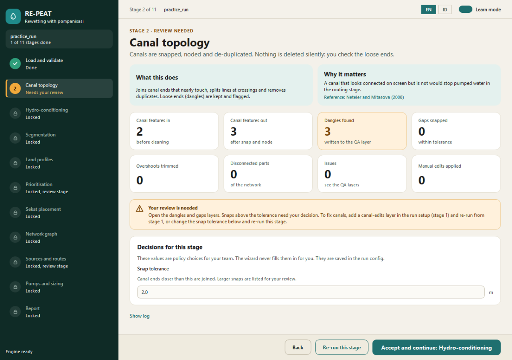
- The stage list on the left shows all 11 stages and where you are. Click a stage to look at it.
- The card in the middle shows what the stage does, its result numbers once it has run, warnings worth a look, and the decisions it needs from you.
- The buttons at the bottom change with the stage: run it, accept it, re-run it, or go back.
- At the top right, EN and ID switch the wizard between English and Bahasa Indonesia. Learn mode adds a short explanation and a reference to each stage.
| Status | Meaning |
|---|---|
| Ready to run | The stage before it is done. You can run it, once its decisions are filled in. |
| Running | It is working. QGIS stays usable and you can cancel. |
| Needs your review | A review stop (stages 2, 6 and 9). Check the layers, then accept or re-run. |
| Done | Finished and accepted. |
| Out of date | You changed a setting after it ran. Re-run it to apply the change. |
| Failed or Interrupted | It stopped with an error or was cancelled. The card shows why. Run it again. |
| Locked | An earlier stage is not finished yet. You can still prepare its decisions. |
The walkthrough
1 Load the practice layers
In QGIS, add these files from the data folder: dtm.tif, moisture.tif, subkhg.gpkg, canals.gpkg, sekat_existing.gpkg, rivers.gpkg, burn_area.gpkg and peat_depth.gpkg. The CSV is chosen in the wizard, not loaded. All layers must be saved files, which these are.
2 Set up the run (stage 1)
Open the wizard. On stage 1, Run setup is open. Fill it in as in the table, then click Create run.
| Field | Choose |
|---|---|
| Output GeoPackage | A new file in an empty folder, for example practice_out\practice.gpkg. The folder becomes the run folder. |
| Starting config | practice_template.yaml |
| Sub-KHG priority table (optional) | data\subkhg_priority.csv. Leave it empty to see what happens without neraca air: all sub-KHGs get equal priority, and stage 10 asks for specific yield, water-table rise and a design period instead. |
| DTM, moisture, sub-KHG, canals, sekat, rivers, burn, peat | The layer with the matching name |
| Canal edits | Leave empty (it is optional) |
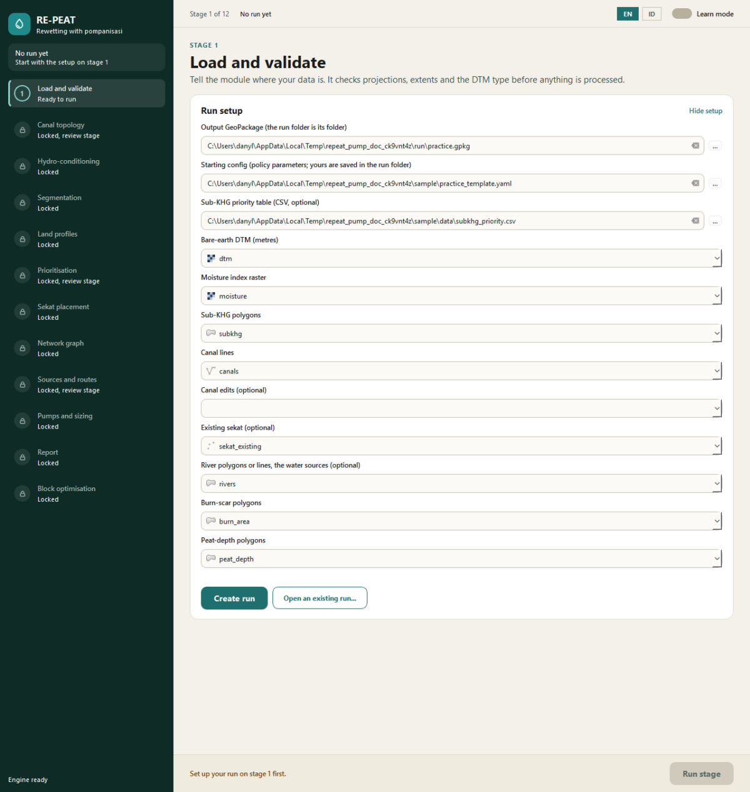
3 Fill in the decisions, run stage 1
A stage will not run while a decision is missing. The empty fields are highlighted and the Run button stays off. The wizard never fills them in. Type the values from the table at the end. Commas work as decimal marks.
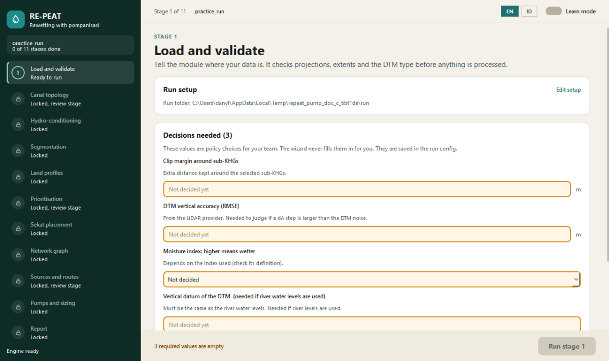
Click Run stage 1. The result tiles appear, and warnings that deserve a look are listed under them.
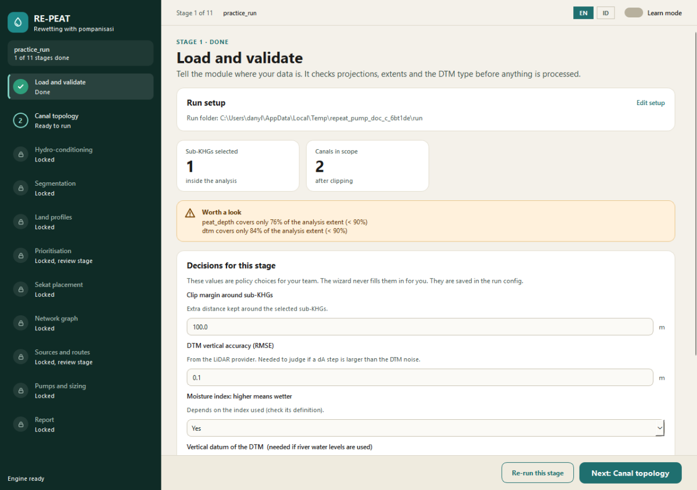
4 Stage 2: a decision, then a review stop
Stage 2 needs a snap tolerance. Without it the stage is blocked.
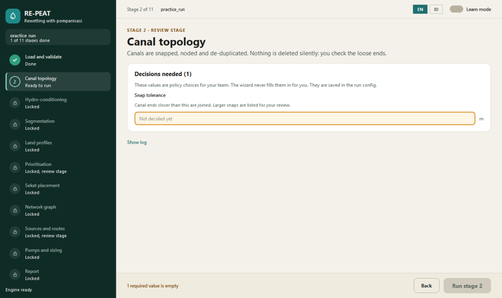
After you run it, the card says Review needed and the canal layers are on the map. Open the dangles and gaps layers and look at the loose ends. Turn on Learn mode if you want the reasoning. When you are satisfied, click Accept and continue.
5 Try changing your mind
Before you accept stage 2, change the snap tolerance to a different value. The stage turns Out of date and Accept disappears: its results were made with the old value. Put the old value back and it returns to Needs your review. This also protects you later in a real run, because a stage cannot be accepted on results that no longer match its settings.
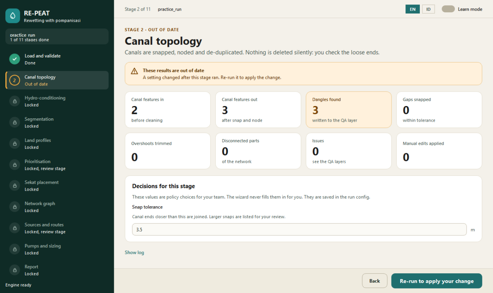
Re-running an earlier stage clears the results of every stage after it, because they depend on it. The wizard asks before it does that and takes those layers off the map.
6 Stages 3 to 5
Stage 3 needs one decision, the maximum breach distance. Stages 4 and 5 need none. Run them one after another. Each result is added to the map, and the stage list shows the progress.
7 Stage 6: the weights
Stage 6 ranks the canal segments, and it needs your weights and one buffer distance. These are the decisions a team should talk about.
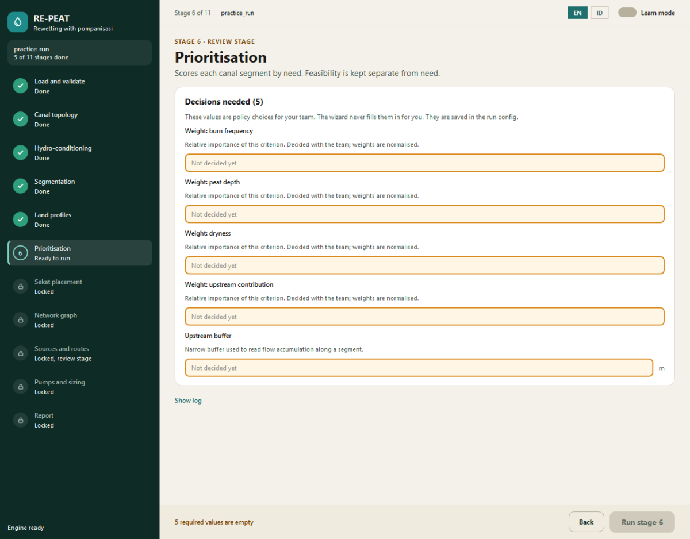
Run it, then at the review stop look at the ranking on the map and at the sensitivity table. If the top segments change a lot when the weights move a little, discuss the weights before you accept.
8 Stages 7 and 8: sekat
Stage 7 needs three distances. It compares the existing sekat with what the terrain needs and proposes new ones. Stage 8 builds the network and needs nothing.
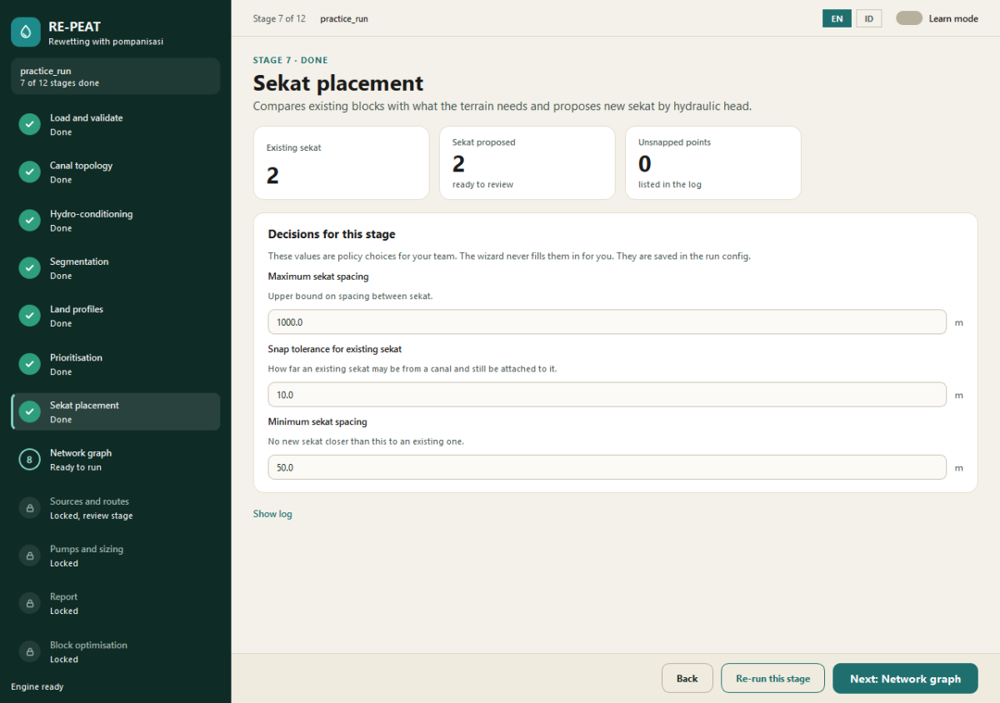
9 Stage 9: routes (review stop)
Stage 9 needs the uphill penalty. It finds the cheapest routes from the river to the top of each priority reach. At the review stop, check that every target is connected to a source. An unreachable target usually means a sekat without a gate.
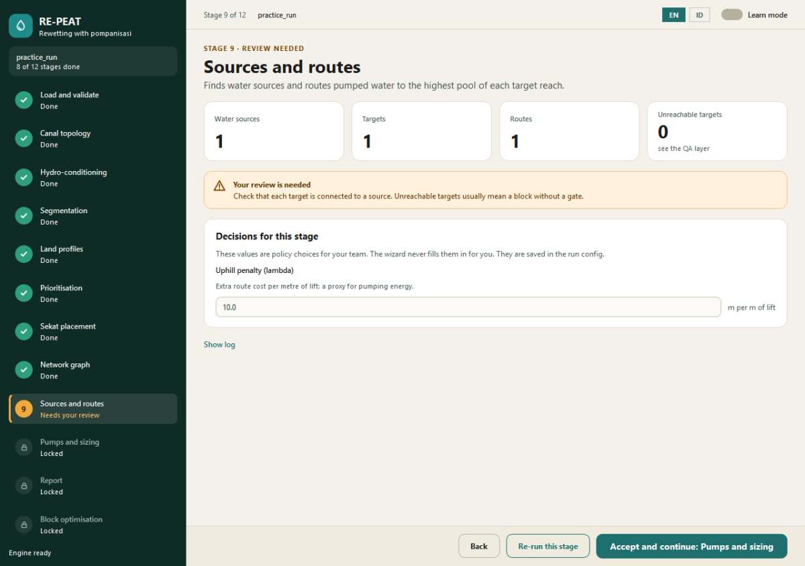
The practice starting config lets the engine add gates to the proposed sekat (pumping.allow_gate_addition in the YAML). Without it the dummy sekat would block the pumped water and the practice run could not finish. In a real run, your team decides this.
10 Stages 10 and 11: pumps and report
Stage 10 needs the pump settings. Choosing canal as the conveyance makes a new field, Manning's n, appear. That is normal: the stage asks only for what the chosen option needs.
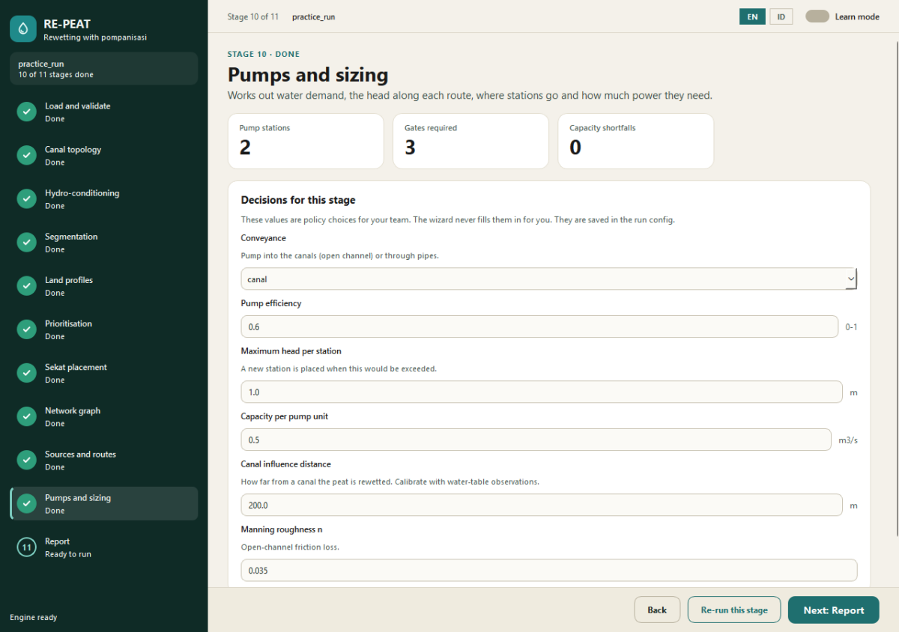
Stage 11 writes run_report.md and run_report.json next to your GeoPackage, and the card has a button to open the report.
11 See the result
The layers of every stage are in the QGIS layer panel, in a group named after the run. Here they are on top of the practice landscape.
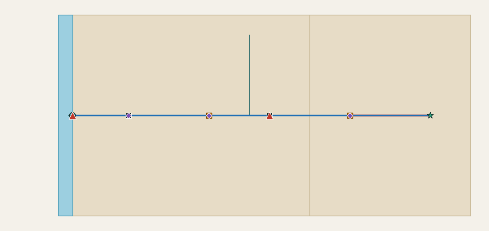
The fast path
To skip the typing, use the ready-made run. In the wizard, click Open an existing run and choose practice_run\run_config.yaml. Every decision is already filled in with the dummy values, so you can run and accept the stages straight through. The run folder is practice_run, and the output appears in its out subfolder.
Good to know
- Docked layout. If you dock the wizard to the side of QGIS, the stage list shrinks to icons and the cards stack in one column.
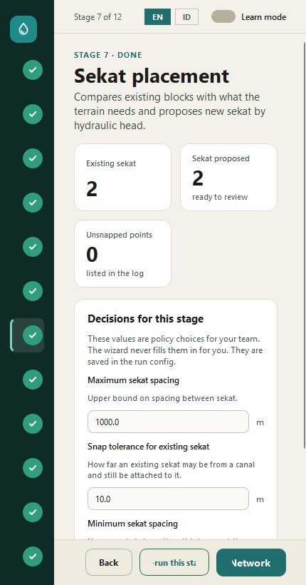
Narrow layout. - Cancel. While a stage runs, Cancel run stops the engine and anything it started, even when it is silent. Run the stage again afterwards.
- Come back later. Everything is saved in the run folder. Use Open an existing run to continue where you stopped.
- Layers the form does not have. The concession layer and water-level observations are not in the setup form yet. Add them to
run_config.yamlby hand and re-run from stage 1. - Language. The wizard follows QGIS: it starts in Indonesian when QGIS is set to Indonesian. Messages written by the engine, such as warnings and the log, stay in English.
Dummy values for the practice run
Practice values only. Do not copy them into a real run.
| Stage | Decision | Dummy value |
|---|---|---|
| 1 | Clip margin around sub-KHGs | 100 m |
| 1 | DTM vertical accuracy (RMSE) | 0.1 m |
| 1 | Moisture index: higher means wetter | Yes |
| 1 | Vertical datum of the DTM, and of river water levels | DUMMY-DATUM (both) |
| 2 | Snap tolerance | 2.0 m |
| 3 | Maximum breach distance | 20 cells |
| 6 | Four criterion weights | 0.25 each |
| 6 | Upstream buffer | 15 m |
| 7 | Maximum sekat spacing / snap tolerance for existing sekat / minimum sekat spacing | 1000 m / 10 m / 50 m |
| 9 | Uphill penalty (lambda) | 10 |
| 10 | Conveyance | canal |
| 10 | Manning roughness n | 0.035 |
| 10 | Pump efficiency | 0.6 |
| 10 | Maximum head per station | 1.0 m |
| 10 | Capacity per pump unit | 0.5 m3/s |
| 10 | Canal influence distance | 200 m |
Panduan wizard dengan data latihan
Panduan praktik wizard terpandu di QGIS. Anda menjalankan semua 11 tahap pada lanskap tiruan yang sangat kecil, sehingga Anda bisa melihat setiap layar, setiap keputusan, dan setiap titik tinjauan sebelum menyentuh data sungguhan.
Semua yang ada di sini memakai data dan angka tiruan. Nilainya dipilih hanya agar lanskap latihan yang kecil dapat menyelesaikan satu proses. Nilai itu bukan rekomendasi. Untuk KHG sungguhan, tim Anda yang memutuskan setiap nilai.
Yang Anda butuhkan
- QGIS 4 dengan plugin terpasang dan mesinnya sudah disiapkan. Lihat install.html.
- Data latihan: practice_data.zip (unduhan kecil, kurang dari 100 KB). Ekstrak ke folder yang mudah Anda temukan lagi. Isinya folder
databerisi layer, konfigurasi awalpractice_template.yaml, dan satu proses siap pakai dipractice_run. - Sekitar 15 menit. Wizard sendiri menjalankan setiap tahap dalam beberapa detik pada lanskap kecil ini.
Lanskap latihan berupa bidang yang naik ke arah timur dari sebuah sungai di tepi barat. Ada dua kanal, dua sub-KHG (hanya yang prioritas tertinggi dipakai), dua sekat yang sudah ada, serta peta gambut dan kebakaran sederhana.
Mengenal jendelanya
Buka wizard dengan tombol tetesan air di toolbar QGIS. Ini adalah tahap 2 yang menunggu tinjauan Anda, dengan Mode belajar aktif.
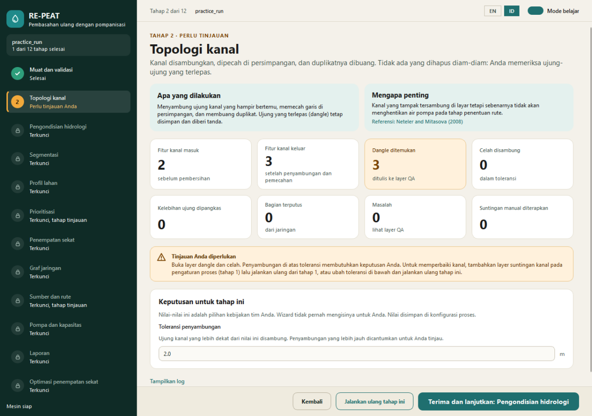
- Daftar tahap di kiri menampilkan semua 11 tahap dan posisi Anda. Klik sebuah tahap untuk melihatnya.
- Kartu di tengah menampilkan apa yang dilakukan tahap itu, angka hasilnya setelah dijalankan, peringatan yang perlu dilihat, dan keputusan yang dibutuhkan dari Anda.
- Tombol di bawah berubah menurut tahap: jalankan, terima, jalankan ulang, atau kembali.
- Di kanan atas, EN dan ID berpindah antara bahasa Inggris dan Bahasa Indonesia. Mode belajar menambahkan penjelasan singkat dan referensi pada setiap tahap.
| Status | Artinya |
|---|---|
| Siap dijalankan | Tahap sebelumnya selesai. Anda bisa menjalankannya setelah keputusannya terisi. |
| Sedang berjalan | Sedang bekerja. QGIS tetap bisa dipakai dan Anda bisa membatalkan. |
| Perlu tinjauan Anda | Titik tinjauan (tahap 2, 6, dan 9). Periksa layernya, lalu terima atau jalankan ulang. |
| Selesai | Sudah selesai dan diterima. |
| Usang | Anda mengubah pengaturan setelah tahap dijalankan. Jalankan ulang untuk menerapkan perubahan. |
| Gagal atau Terhenti | Berhenti karena galat atau dibatalkan. Kartu menunjukkan sebabnya. Jalankan lagi. |
| Terkunci | Tahap sebelumnya belum selesai. Keputusannya sudah bisa Anda siapkan. |
Langkah demi langkah
1 Muat layer latihan
Di QGIS, tambahkan berkas ini dari folder data: dtm.tif, moisture.tif, subkhg.gpkg, canals.gpkg, sekat_existing.gpkg, rivers.gpkg, burn_area.gpkg, dan peat_depth.gpkg. Berkas CSV dipilih di wizard, tidak dimuat. Semua layer harus berupa berkas tersimpan, dan memang demikian.
2 Siapkan proses (tahap 1)
Buka wizard. Di tahap 1, Pengaturan proses terbuka. Isi seperti pada tabel, lalu klik Buat proses.
| Kolom | Pilih |
|---|---|
| GeoPackage keluaran | Berkas baru di folder kosong, misalnya practice_out\practice.gpkg. Folder itu menjadi folder proses. |
| Konfigurasi awal | practice_template.yaml |
| Tabel prioritas sub-KHG (opsional) | data\subkhg_priority.csv. Kosongkan untuk melihat apa yang terjadi tanpa neraca air: semua sub-KHG mendapat prioritas sama, dan tahap 10 meminta hasil jenis, kenaikan muka air, dan periode rancangan. |
| DTM, kelembapan, sub-KHG, kanal, sekat, sungai, kebakaran, gambut | Layer dengan nama yang sesuai |
| Suntingan kanal | Biarkan kosong (opsional) |
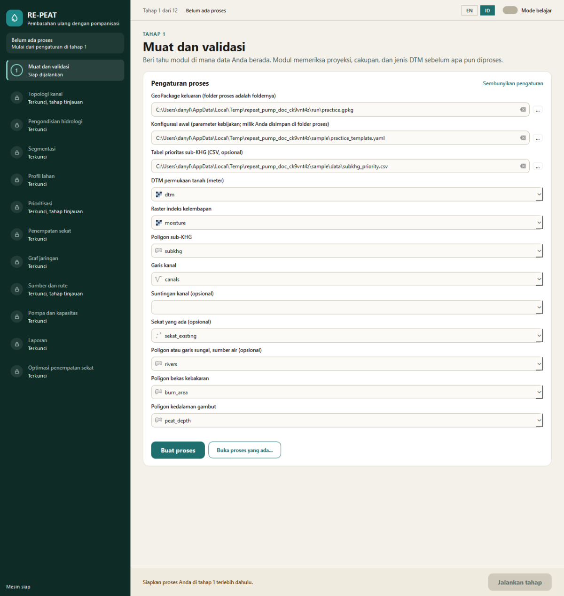
3 Isi keputusan, jalankan tahap 1
Sebuah tahap tidak akan berjalan selama masih ada keputusan yang kosong. Kolom yang kosong disorot dan tombol Jalankan tetap mati. Wizard tidak pernah mengisinya. Ketik nilai dari tabel di bagian akhir. Koma dapat dipakai sebagai tanda desimal.
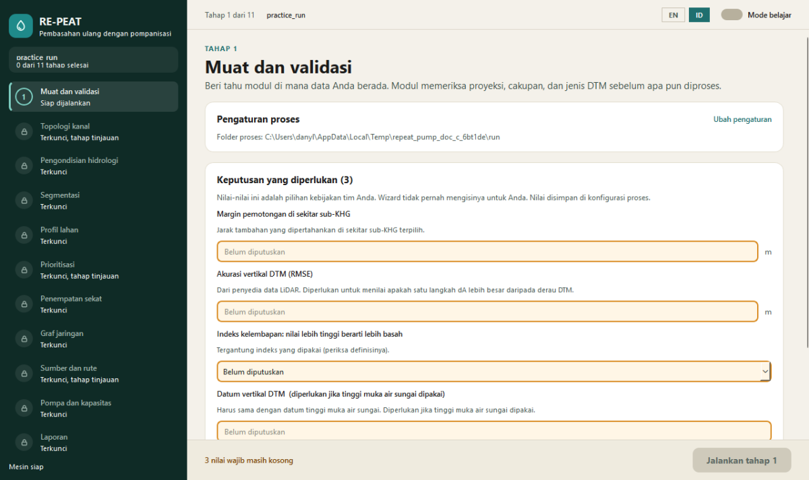
Klik Jalankan tahap 1. Kotak hasil muncul, dan peringatan yang perlu dilihat dicantumkan di bawahnya.
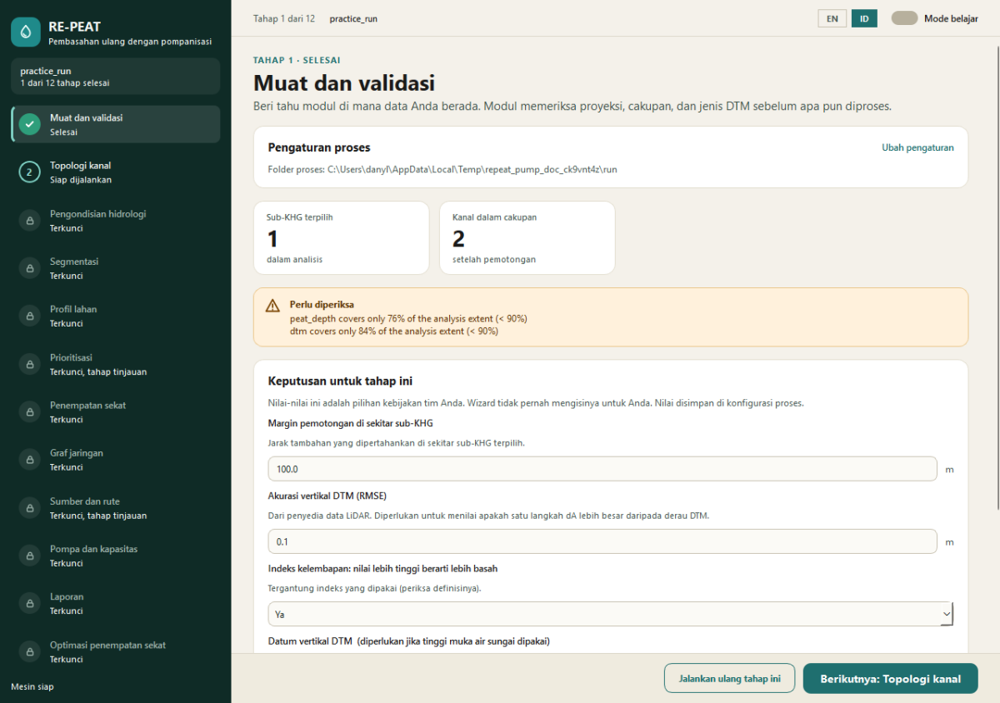
4 Tahap 2: satu keputusan, lalu titik tinjauan
Tahap 2 membutuhkan toleransi penyambungan. Tanpanya, tahap ini terhalang.
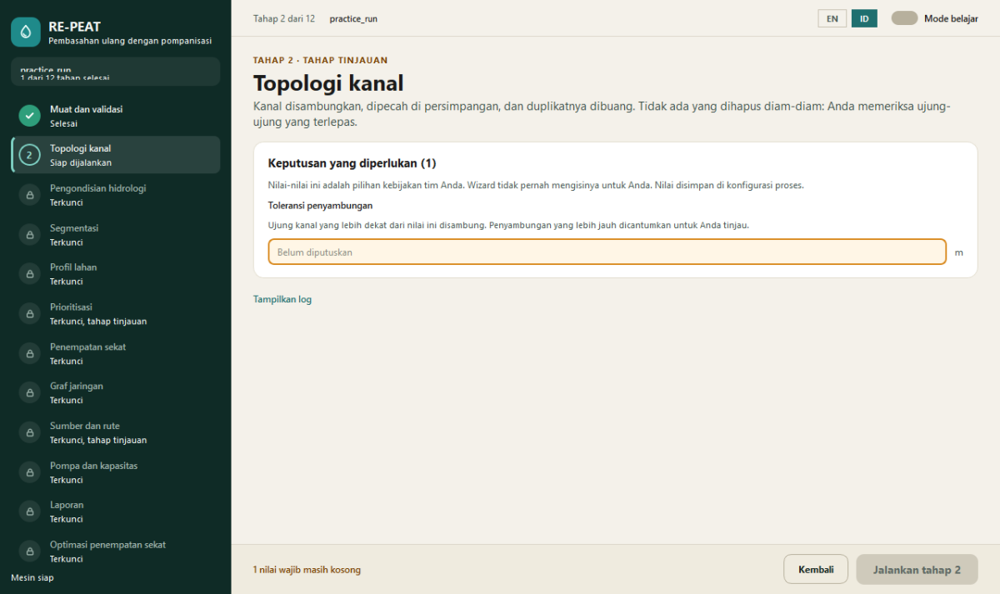
Setelah dijalankan, kartu menampilkan Perlu tinjauan Anda dan layer kanal sudah ada di peta. Buka layer dangle dan celah, lalu lihat ujung-ujung yang terlepas. Aktifkan Mode belajar jika Anda ingin penalarannya. Jika sudah puas, klik Terima dan lanjutkan.
5 Coba ubah pikiran
Sebelum menerima tahap 2, ubah toleransi penyambungan ke nilai lain. Tahap berubah menjadi Usang dan tombol Terima hilang: hasilnya dibuat dengan nilai yang lama. Kembalikan nilai lama dan tahap kembali ke Perlu tinjauan Anda. Ini juga melindungi Anda nanti pada proses sungguhan, karena sebuah tahap tidak bisa diterima atas hasil yang sudah tidak cocok dengan pengaturannya.
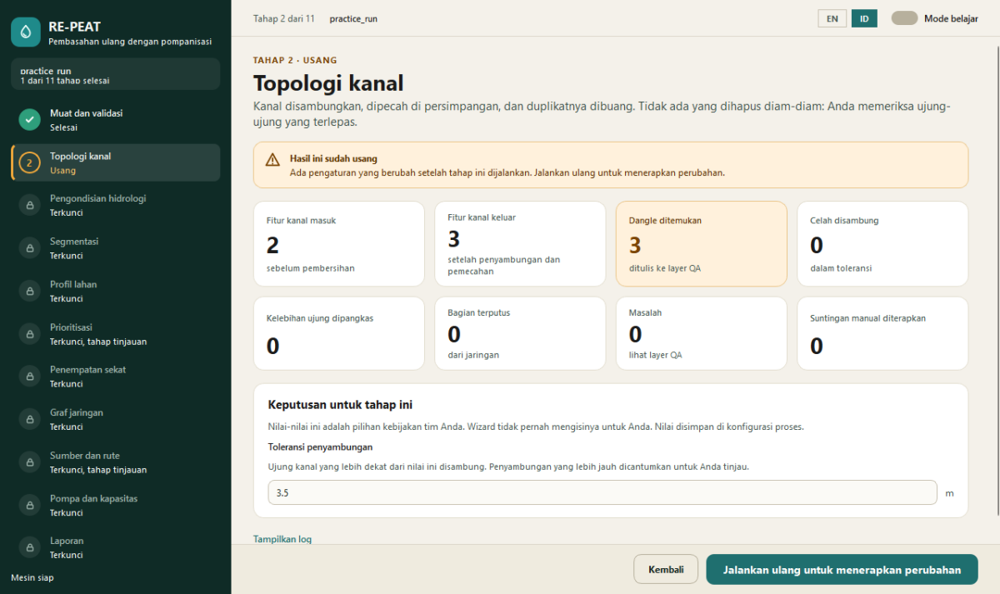
Menjalankan ulang tahap yang lebih awal menghapus hasil semua tahap sesudahnya, karena mereka bergantung padanya. Wizard bertanya dulu sebelum melakukannya dan mencabut layer-layer itu dari peta.
6 Tahap 3 sampai 5
Tahap 3 membutuhkan satu keputusan, jarak penembusan maksimum. Tahap 4 dan 5 tidak membutuhkan apa pun. Jalankan satu per satu. Setiap hasil ditambahkan ke peta, dan daftar tahap menunjukkan kemajuannya.
7 Tahap 6: bobot
Tahap 6 mengurutkan segmen kanal, dan membutuhkan bobot Anda serta satu jarak penyangga. Inilah keputusan yang sebaiknya dibicarakan oleh tim.
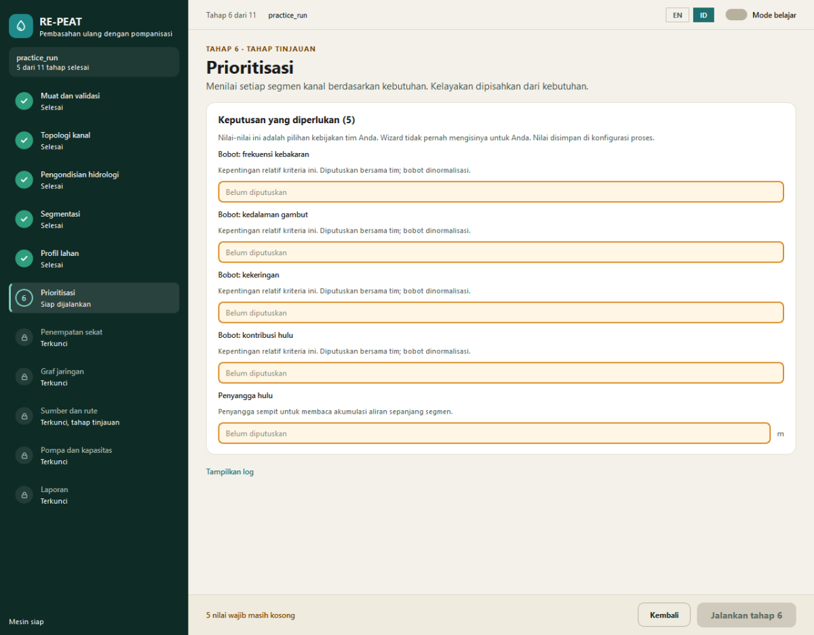
Jalankan, lalu di titik tinjauan lihat peringkat di peta dan tabel sensitivitas. Jika segmen teratas banyak berubah saat bobot digeser sedikit, bahaslah bobotnya sebelum menerima.
8 Tahap 7 dan 8: sekat
Tahap 7 membutuhkan tiga jarak. Tahap ini membandingkan sekat yang ada dengan kebutuhan medan dan mengusulkan sekat baru. Tahap 8 menyusun jaringan dan tidak membutuhkan apa pun.
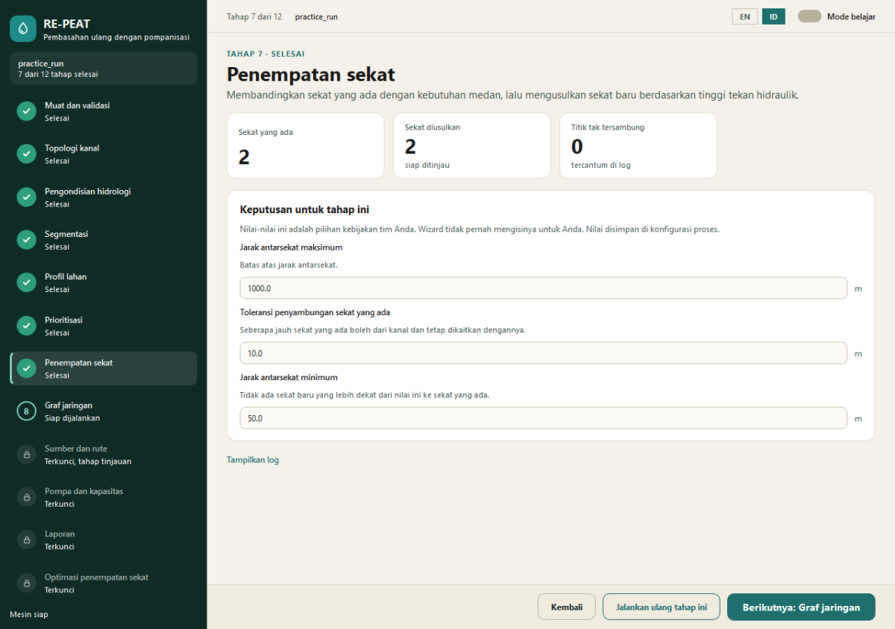
9 Tahap 9: rute (titik tinjauan)
Tahap 9 membutuhkan penalti tanjakan. Tahap ini mencari rute termurah dari sungai ke bagian atas setiap ruas prioritas. Di titik tinjauan, periksa bahwa setiap sasaran tersambung ke sumber. Sasaran yang tak terjangkau biasanya berarti ada sekat tanpa pintu air.
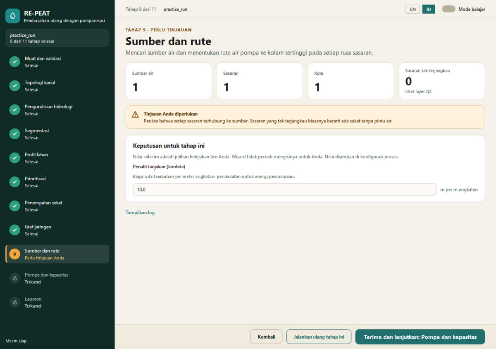
Konfigurasi awal latihan mengizinkan mesin menambahkan pintu air pada sekat usulan (pumping.allow_gate_addition di YAML). Tanpa itu, sekat tiruan akan menghalangi air pompa dan proses latihan tidak dapat selesai. Pada proses sungguhan, tim Anda yang memutuskannya.
10 Tahap 10 dan 11: pompa dan laporan
Tahap 10 membutuhkan pengaturan pompa. Memilih canal sebagai penyaluran memunculkan kolom baru, n Manning. Itu normal: tahap hanya meminta apa yang dibutuhkan pilihan Anda.
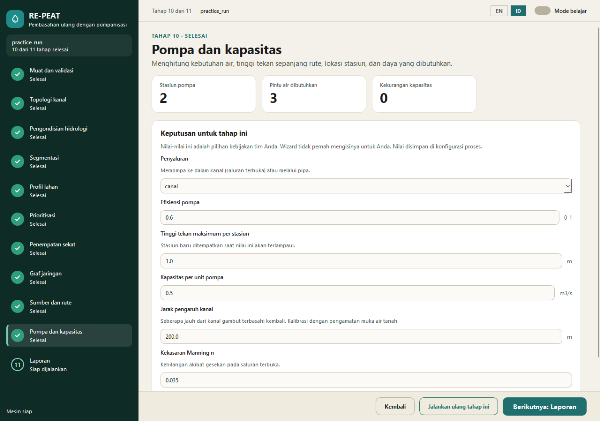
Tahap 11 menulis run_report.md dan run_report.json di samping GeoPackage Anda, dan kartunya memiliki tombol untuk membuka laporan.
11 Lihat hasilnya
Layer setiap tahap ada di panel layer QGIS, dalam grup yang diberi nama sesuai proses. Berikut tampilannya di atas lanskap latihan.
Jalur cepat
Untuk melewati pengetikan, pakai proses yang sudah jadi. Di wizard, klik Buka proses yang ada dan pilih practice_run\run_config.yaml. Semua keputusan sudah terisi dengan nilai tiruan, jadi Anda dapat langsung menjalankan dan menerima tahap demi tahap. Folder prosesnya adalah practice_run, dan keluarannya muncul di subfolder out.
Baik diketahui
- Tata letak dok. Jika Anda memasang wizard di sisi QGIS, daftar tahap mengecil menjadi ikon dan kartu tersusun dalam satu kolom.
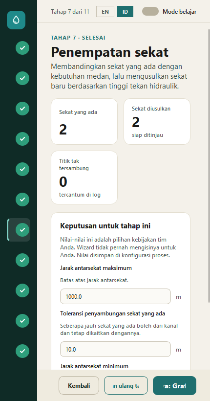
Tata letak sempit. - Batalkan. Saat sebuah tahap berjalan, Batalkan proses menghentikan mesin dan semua yang dimulainya, bahkan ketika mesin diam saja. Jalankan tahapnya lagi sesudahnya.
- Kembali lagi nanti. Semuanya tersimpan di folder proses. Pakai Buka proses yang ada untuk melanjutkan dari tempat Anda berhenti.
- Layer yang belum ada di formulir. Layer konsesi dan pengamatan tinggi muka air belum ada di formulir pengaturan. Tambahkan secara manual ke
run_config.yamllalu jalankan ulang dari tahap 1. - Bahasa. Wizard mengikuti QGIS: wizard dimulai dalam bahasa Indonesia jika QGIS diatur ke bahasa Indonesia. Pesan yang ditulis mesin, seperti peringatan dan log, tetap berbahasa Inggris.
Nilai tiruan untuk proses latihan
Hanya nilai latihan. Jangan salin ke proses sungguhan.
| Tahap | Keputusan | Nilai tiruan |
|---|---|---|
| 1 | Margin pemotongan di sekitar sub-KHG | 100 m |
| 1 | Akurasi vertikal DTM (RMSE) | 0,1 m |
| 1 | Indeks kelembapan: nilai lebih tinggi berarti lebih basah | Ya |
| 1 | Datum vertikal DTM, dan tinggi muka air sungai | DUMMY-DATUM (keduanya) |
| 2 | Toleransi penyambungan | 2,0 m |
| 3 | Jarak penembusan maksimum | 20 sel |
| 6 | Empat bobot kriteria | 0,25 masing-masing |
| 6 | Penyangga hulu | 15 m |
| 7 | Jarak antarsekat maksimum / toleransi penyambungan sekat yang ada / jarak antarsekat minimum | 1000 m / 10 m / 50 m |
| 9 | Penalti tanjakan (lambda) | 10 |
| 10 | Penyaluran | canal |
| 10 | Kekasaran Manning n | 0,035 |
| 10 | Efisiensi pompa | 0,6 |
| 10 | Tinggi tekan maksimum per stasiun | 1,0 m |
| 10 | Kapasitas per unit pompa | 0,5 m3/s |
| 10 | Jarak pengaruh kanal | 200 m |